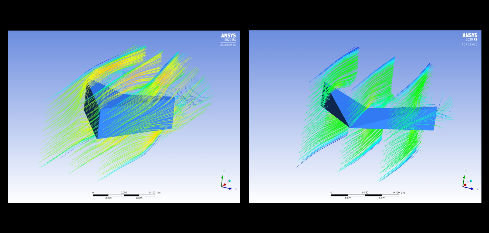
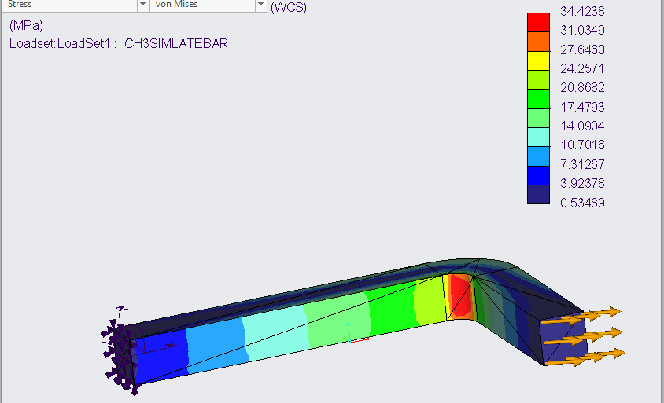
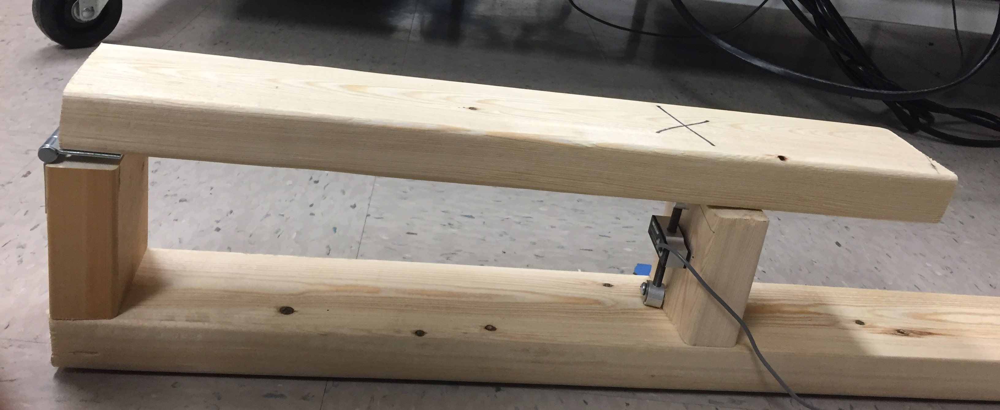
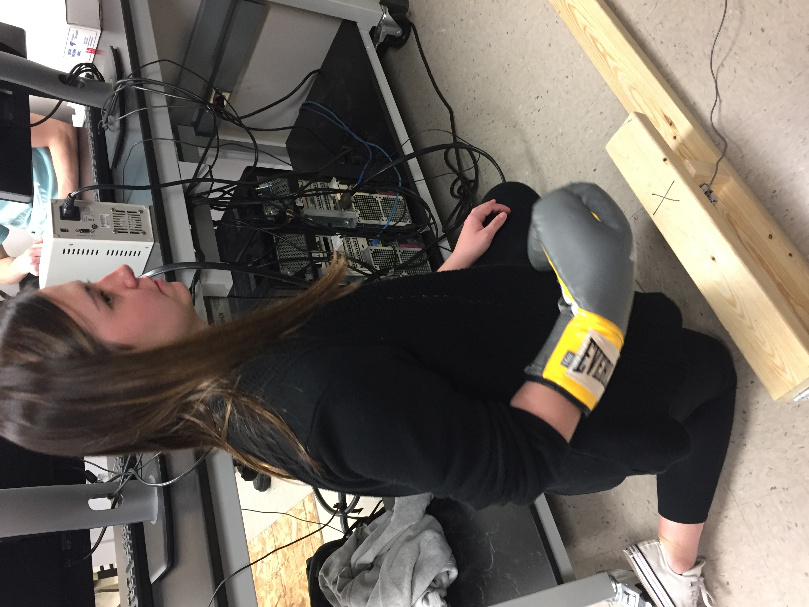
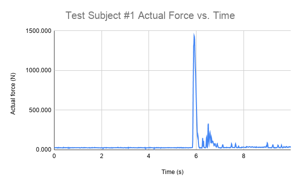

Engineering
“Engineering is the closest thing to magic that exists in the world.” - Elon Musk
Engineering Projects
Here are some engineering projects. To see more of my projects/classwork check out my GrabCAD and Github
Airflow over airfoils
Over the summer, I decided to learn analysis software called Ansys. I used Autodesk Inventor to make several airfoils. After creating the airfoils, I imported the geometry into Ansys. I then executed simulation to get streamlines over the object. Six different airfoils were created. The first and the last airfoil streamlines can be seen down below.
Finite Element Analysis on a tank
I modeled a tank and ran a finite element analysis on it. Displacement constraints were placed on the exterior of the tank; a load (pressure of 100 kPa) was placed inside the tank. The deformation of the tank can be seen in the second image.

Finite Element Analysis on an L-shaped bar with an applied force
I am currently taking a class where we are learning finite element analysis. I used Creo paramatric to create an L-shaped bar. After creating the part, it was imported into Creo Simulate. In the Creo Simulate, a displacement constraint was added to one end of the bar and a load to the other end. This can be seen in the picture down below. I really liked this assingment because I would like to go into design after graduation.
Punch Force Analysis
I was a part of a three person team that designed and executed an experiment using a load cell. In addition to the load cell, a data acquisition hardware and LabVIEW were used. Labview was used to record data which was then exported to Excel for analysis. In order to properly record the force of a punch, a mechanism needed to be designed to mount the load cell. Various test subjects punched the jig. Figure 1 illustrates the punching device. Figure 2 shows a test subject ready to punch the device.

Figure 1: Punching Mechanism

Figure 2: Test subject ready to punch
The data that came directly from Labview couldnt be neccessarily analyzed. The data that was output from Labview included voltages and times. Essentially, whenever the load cell experience some amount of force, it would output a voltage. Before the experiment, our team worked on creating a calibration curve that essentially converted voltages into force (N). One of the graphs that was analyzed can be seen in Figure 3. On the graph, it can be seen around 6 seconds that the load cell experienced around 1500 N. The other spikes in force after 6 seconds are most likely due to the bounce of the mechanism.
Figure 3: Graph of Force vs Time
This experiment was done for my Mechanical Engineering 303: Instrumentation and Measurements. This is hands down one of my top 3 favorite classes I have taken in college. The full lab report can be seen here.
Saturn V Stage Seperation Model: Matlab
As a class assingment, I was tasked to create a Saturn V launch model. The source code can be seem down below. This model kept track of stage seperation, rocket mass, and amount of fuel.
clear; clc;
%Declaring Variables
RadiusOfEarth=6.38*10^6; %radius of the Earth (m)
MassOfEarth=5.98*10^24; %mass of the Earth (kg)
gravity=6.673*10^-11; %gravitational constant (N*m^2/kg^2)
Stage1Thrust=34*10^6; %Thrust of stage 1 (N)
Stage2Thrust=5*10^6; %Thrust of stage 2 (N)
Stage3Thrust=1*10^6; %Thrust of stage 3 (N)
Stage1Velocity=2580; %exhaust velocity of stage 1 (m/s)
Stage2Velocity=4130; %exhaust velocity of stage 2 (m/s)
Stage3Velocity=4130; %exhaust velocity of stage 3 (m/s)
Stage1EmptyMass=131000; %empty mass of stage 1 (kg)
Stage2EmptyMass=36000; %empty mass of stage 2 (kg)
Stage3EmptyMass=11000; %empty mass of stage 3 (kg)
Stage1FueledMass=2300000; %full mass of stage 1 (kg)
Stage2FueledMass=480000; %full mass of stage 2 (kg)
Stage3FueledMass=119000; %full mass of stage 3 (kg)
PayloadMass=52000; %mass of the payload (kg)
dt=.1; %step size
n=10000; %number of iterations
i=2;
time=zeros(1,n); %time array
RocketMass=zeros(1,n); %mass array
yPosition=zeros(1,n); %position array
velocity=zeros(1,n); %velocity array
acceleration=zeros(1,n); %acceleration array
%starting values
time(1)=0; %starting value for time
yPosition(1)=0; %starting value for position
velocity(1)=0; %starting value for velocity
acceleration(1)=-gravity*MassOfEarth/(RadiusOfEarth+yPosition(1))^2; %starting value for acceleration
RocketMass(1)=Stage1FueledMass+Stage2FueledMass+Stage3FueledMass+PayloadMass; %starting value for mass
MRBJ1=Stage1EmptyMass+Stage2FueledMass+Stage3FueledMass+PayloadMass; %mass after stage 1
MRBJ2=Stage2EmptyMass+Stage3FueledMass+PayloadMass; %mass after stage 2
MRBJ3=Stage3EmptyMass+PayloadMass; %mass after stage 3
%loop for stage 1
while (RocketMass(i-1)>MRBJ1) %loop runs until stage one is empty
time(i)=time(i-1)+dt;
RocketMass(i)=RocketMass(i-1)-Stage1Thrust*dt/Stage1Velocity;
yPosition(i)=yPosition(i-1)+velocity(i-1)*dt;
velocity(i)=velocity(i-1)+acceleration(i-1)*dt;
acceleration(i)=-gravity*MassOfEarth/(RadiusOfEarth+yPosition(i))^2+Stage1Thrust/RocketMass(i);
i=i+1; %change in i value to associate change in stage
end
RocketMass(i)=Stage2FueledMass+Stage3FueledMass+PayloadMass; %new mass after empty stage 1
pause1=i+3*(1/dt); %time for waiting after jettision
%for loop for time waiting after jettison
for i=i:pause1 %runs for the time of the pause
time(i)=time(i-1)+dt;
RocketMass(i)=RocketMass(i-1);
yPosition(i)=yPosition(i-1)+velocity(i-1)*dt;
velocity(i)=velocity(i-1)+acceleration(i-1)*dt;
acceleration(i)=-gravity*MassOfEarth/(RadiusOfEarth+yPosition(i))^2; %no thrust in equations due to wait after jettison
i=i+1;
end
%loop for stage 2
while (RocketMass(i-1)>MRBJ2) %loop runs until stage 2 is empty
time(i)=time(i-1)+dt;
RocketMass(i)=RocketMass(i-1)-Stage2Thrust*dt/Stage2Velocity;
yPosition(i)=yPosition(i-1)+velocity(i-1)*dt;
velocity(i)=velocity(i-1)+acceleration(i-1)*dt;
acceleration(i)=-gravity*MassOfEarth/(RadiusOfEarth+yPosition(i))^2+Stage2Thrust/RocketMass(i);
i=i+1;
end
RocketMass(i)=Stage3FueledMass+PayloadMass; %new mass after stage 2 is empty
pause2=i+3*(1/dt); %same time wait for jettison
%loop for wait after jettison
for i=i:pause2
time(i)=time(i-1)+dt;
RocketMass(i)=RocketMass(i-1);
yPosition(i)=yPosition(i-1)+velocity(i-1)*dt;
velocity(i)=velocity(i-1)+acceleration(i-1)*dt;
acceleration(i)=-gravity*MassOfEarth/(RadiusOfEarth+yPosition(i))^2;
i=i+1;
end
%loop for stage 3
while (RocketMass(i-1)>MRBJ3) %loop runs until stage 3 is empty
time(i)=time(i-1)+dt;
RocketMass(i)=RocketMass(i-1)-Stage3Thrust*dt/Stage3Velocity;
yPosition(i)=yPosition(i-1)+velocity(i-1)*dt;
velocity(i)=velocity(i-1)+acceleration(i-1)*dt;
acceleration(i)=-gravity*MassOfEarth/(RadiusOfEarth+yPosition(i))^2+Stage3Thrust/RocketMass(i);
i=i+1;
end
RocketMass(i)=PayloadMass; %new mass for after all stages empty
%loop for after all fuel is empty
while (velocity(i-1)>=0) %loop runs until velocity of rocket is 0
time(i)=time(i-1)+dt;
RocketMass(i)=RocketMass(i-1)*dt;
yPosition(i)=yPosition(i-1)+velocity(i-1)*dt;
velocity(i)=velocity(i-1)+acceleration(i-1)*dt;
acceleration(i)=-gravity*MassOfEarth/(RadiusOfEarth+yPosition(i))^2;
i=i+1;
end
%plots for accel, velocity, and position vs time graphs
figure("Name",'reee')
subplot(2,2,1);
plot(time,acceleration)
xlabel('Time (s)');
ylabel('Acceleration (m/s^2)');
title('Acceleration vs Time');
subplot(2,2,2);
plot(time,velocity)
xlabel('Time (s)');
ylabel('Velocity (m/s)');
title('Velocity vs Time');
subplot(2,2,3);
plot(time,yPosition)
xlabel('Time (s)');
ylabel('Position (m)');
title('Position vs Time');
max(yPosition)